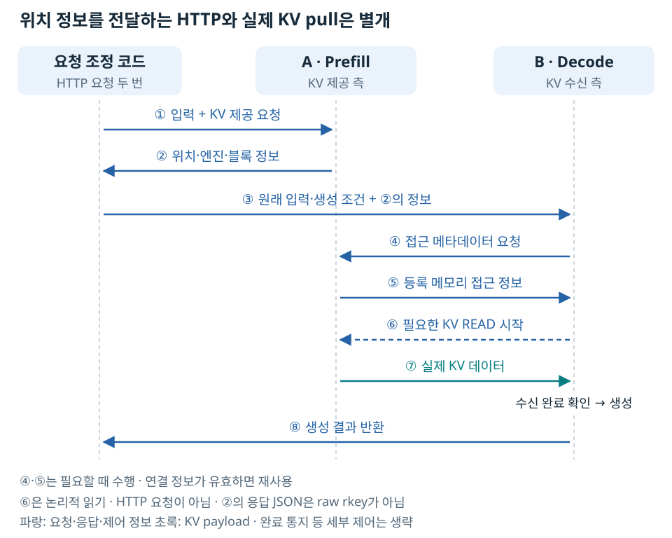
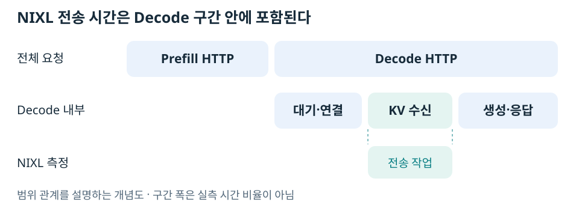

Prefill/Decode 분리는 입력 처리와 토큰 생성을 서로 다른 모델 엔진에 맡기는 구조다. 두 엔진을 켜 놓는 것만으로 요청이 자동으로 이어지지는 않는다. NixlConnector의 pull 방식에서는 요청을 조정하는 코드가 KV 위치 정보를 Decode로 넘기고, Decode가 실제 데이터를 가져온다.
모델 서버 두 개를 켜는 것만으로 요청이 이어지지 않는다
검증 환경에서는 A에 Prefill HTTP 8100, B에 Decode HTTP 8200을 열었다. 두 엔진 모두 Qwen3-8B 전체 모델을 가지고, NIXL의 UCX backend를 사용했다. KV 메타데이터 교환 주소는 HTTP 주소와 별도로 설정했다.
vLLM의 --kv-transfer-config에서 A는 kv_producer, B는 kv_consumer로 설정했다. 이는 KV 제공·수신 역할을 지정하는 것이다. 일반적인 ‘모델 앞 레이어·뒤 레이어’의 분할이 아니다. kv_both는 양쪽 KV 역할을 허용하는 옵션이며, 요청을 어떤 엔진에 보낼지는 별도로 결정해야 한다. vLLM NixlConnector 안내.
요청 조정 코드가 두 번의 HTTP 요청을 보낸다

그림의 ②는 요청 조정 코드에 반환하는 KV 위치·엔진·블록 정보이고, ⑤는 Decode가 제공 측에 직접 요청해 받는 등록 메모리 접근 정보다. 같은 ‘메타데이터’라도 전달 경로와 내용이 다르다. HTTP 응답에 raw rkey를 담아 전달하는 것으로 해석하면 안 된다.
④·⑤는 유효한 원격 엔진 정보가 없을 때 필요하고, 이미 확보했다면 재사용할 수 있다. ⑥은 Decode가 NIXL READ를 시작한다는 뜻이지 조정 코드가 세 번째 모델 HTTP 요청을 보낸다는 뜻이 아니다. 실제 KV는 ⑦에서 반대 방향으로 이동한다.
실험에서는 Python 요청 코드가 이 조정 역할을 했다. 별도 운영용 프록시를 배포한 것은 아니다. 서비스에서는 프록시가 사용자의 요청 하나를 받고 내부적으로 위 두 요청을 수행할 수 있다.
핵심 코드 형태는 다음과 같다. post는 JSON HTTP 요청을 보내는 함수라고 가정한 설명용 축약이다. 실행 가능한 전체 코드는 requests_lab.py (로컬 보존 자료: research/distributed_runtime_cross_node_transport/experiments/requests_lab.py)에 있다.
prefill_body = dict(original_body, max_tokens=1)
prefill_body["kv_transfer_params"] = {
"do_remote_decode": True,
"do_remote_prefill": False,
}
prefill_reply = post(PREFILL_URL, prefill_body)
# Decode 주소는 조정 코드가 이미 알고 있다.
# 반환된 remote_host는 Decode 주소가 아니라 KV를 가진 Prefill 주소다.
decode_body = dict(original_body)
decode_body["kv_transfer_params"] = prefill_reply["kv_transfer_params"]
answer = post(DECODE_URL, decode_body)
왜 Decode에 원래 입력도 보내는가
KV 위치만으로는 요청의 입력 토큰·길이·생성 조건을 모두 표현할 수 없다. 이 API에서는 Decode가 요청을 구성하고 캐시 재사용 범위를 연결할 수 있도록 원래 입력 토큰을 함께 보낸다. 프롬프트를 다시 보냈다고 전체 Prefill을 다시 계산했다는 뜻은 아니다.
검증 코드는 문자열을 양쪽에서 다르게 토큰화할 가능성을 줄이기 위해 동일한 토큰 ID 배열을 사용했다. Prefill의 max_tokens=1 응답 텍스트를 Decode의 최종 답변에 단순 연결하지 않고, 원래 입력을 기준으로 Decode에 32토큰 생성을 요청했다. 이 구현의 절차이며 모든 P/D 시스템의 첫 토큰 처리 방식이 동일하다는 뜻은 아니다.
응답의 필드는 무엇을 의미하는가
| 필드 | 의미 |
|---|---|
remote_host, remote_port |
원격 KV 제공 엔진의 메타데이터 교환 위치 |
remote_engine_id |
KV를 제공한 실행 중 엔진의 식별자 |
remote_request_id |
제공 측 요청의 식별자 |
remote_block_ids |
그 요청의 KV가 들어 있는 제공 측 블록 |
remote_num_tokens |
재사용할 원격 KV에 대응하는 토큰 범위 정보 |
tp_size, pp_size, dcp_size |
원격 엔진의 분할 정보 |
transfer_mode: pull |
받는 쪽이 원격 데이터를 가져오는 방식 |
블록 ID는 rkey도 전역 메모리 주소도 아니다. remote_host:remote_port는 메타데이터 교환 위치이며 KV payload 전부가 반드시 그 포트를 통과하는 것은 아니다. 메모리 등록과 키 교환이 실제 메모리 접근으로 이어지는 과정을 설명한다.
또한 Prefill HTTP 응답이 끝났다고 제공 측 KV 블록을 즉시 재사용해도 되는 것은 아니다. Decode가 읽는 동안 원격 데이터가 유효해야 한다. 비동기 수신 완료와 제공 측 회수의 관계는 Pull의 수명 주기에서 다룬다.
HTTP 200만으로는 KV 재사용을 증명하지 못한다
일반 추론 요청도 HTTP 200을 반환한다. 다음 관측을 묶어서 판단했다.
- Prefill 응답에 원격 엔진과 KV 블록 정보가 있었다.
- Decode의 NIXL 전송 건수가 요청당 1 증가했다.
- 전송 바이트가 블록 수로 계산한 KV 크기와 일치했다.
source="external_kv_transfer"입력 토큰이 원래 입력 길이만큼 증가했다.- 실패 전송 증가는 0이었다.
- Decode UCX 로그에 서버 간 GPU 원격 읽기와
tcp/podnet1이 표시되었다.
이 검증은 외부 KV 전달·사용의 증거다. 모든 GPU 커널을 추적하여 재계산이 한 연산도 없음을 증명한 것은 아니다. 128토큰 요청 원본 (로컬 보존 자료: research/distributed_runtime_cross_node_transport/runs/archive-a/full-20261010/pd-requests/128-pd-0/result.json), 673토큰 요청 원본 (로컬 보존 자료: research/distributed_runtime_cross_node_transport/runs/archive-a/full-20261010/pd-requests/673-pd-0/result.json).
KV 전송 시간과 Decode HTTP 시간은 다르다

정확한 내부 구간 분해를 한 타임라인은 아니고 범위의 관계를 표현한 것이다. 수신 측에서 전후 메트릭 차이를 구한 이름은 다음과 같다.
vllm:nixl_bytes_transferred_count 전송 건수
vllm:nixl_bytes_transferred_sum 전송 바이트 합계
vllm:nixl_xfer_time_seconds_sum 전송 시간 합계
vllm:nixl_xfer_time_seconds_count 전송 시간 표본 수
vllm:nixl_num_failed_transfers_total 실패 건수
전송 1건당 평균은 시간 합계 증가량을 시간 표본 수 증가량으로 나눈다. 동시 요청에서는 여러 전송 시간이 겹치므로 이 합계가 실제 경과 시간보다 클 수 있다. 보내는 쪽에 아무 기록도 없다는 뜻은 아니며, 이 검증은 수신 완료를 확인하는 Decode 쪽 메트릭을 기준으로 삼았다.
kv_load_failure_policy=fail로 KV 로드 실패를 조용히 정상 전송처럼 취급하지 않도록 구성했다. 잘못된 정보·재시작 이후 동작은 장애와 복구에 구분했다.